흩어진 일을
한 화면에서
놓치지 않게
할 일 · 업무일지 · 주간 보고 · 프로젝트 · 회의록 · 메신저를 하나로 묶었습니다. PC 앱, 휴대폰, 웹 브라우저 어디서나 같은 화면을 씁니다.

🖥 📱 🌐PC 앱 · 휴대폰 · 웹 같은 화면
⬆ 자동새 버전은 저절로 적용
🔔 알림앱을 닫아도 메시지 · 마감 알림
🔒 회사별회사마다 따로 · 권한별 공개
할 일 · 업무일지 · 주간 보고 · 프로젝트 · 회의록 · 메신저를 하나로 묶었습니다. PC 앱, 휴대폰, 웹 브라우저 어디서나 같은 화면을 씁니다.
아래 화면은 모두 가상의 사람 · 회사 · 업무로 채운 예시입니다. 그림을 누르면 크게 보입니다.
말하듯 적으면 마감 · 시간 · 중요도가 함께 들어갑니다. 목록 · 보드 · 타임라인 · 달력 중 편한 보기로 봅니다.
/todo 로 바로 등록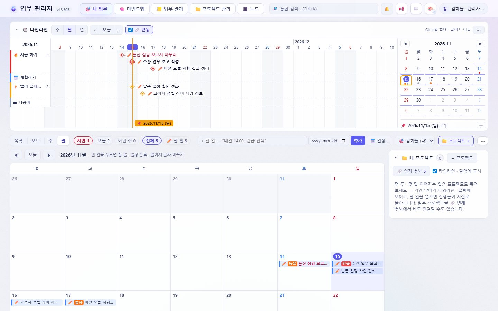
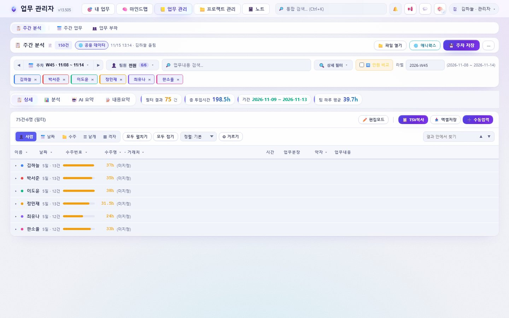
엑셀 업무일지를 올리면 팀 전체가 같은 데이터를 봅니다. 주차 · 팀원 · 사업부 · 수주별로 골라 시간과 내용을 나눠 봅니다.
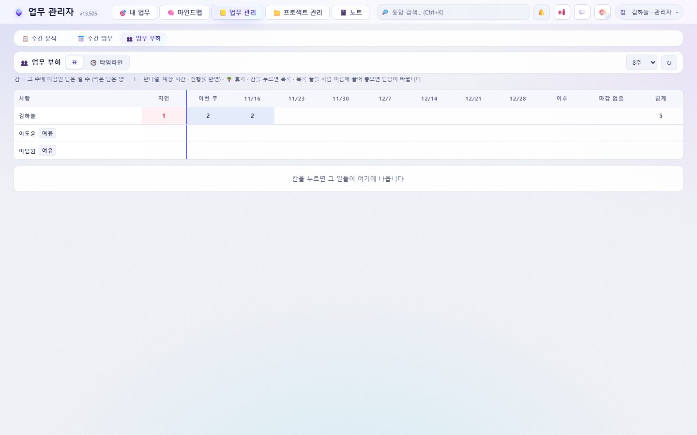
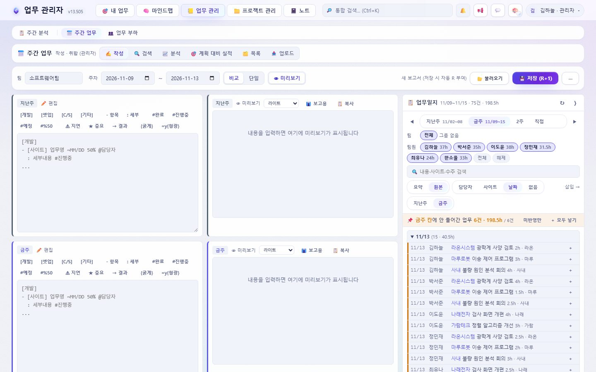
지난주 실적과 이번 주 계획을 쓰면 업무일지에서 빠진 일을 찾아 알려 줍니다. 치운 일도 결말까지 따라갑니다.
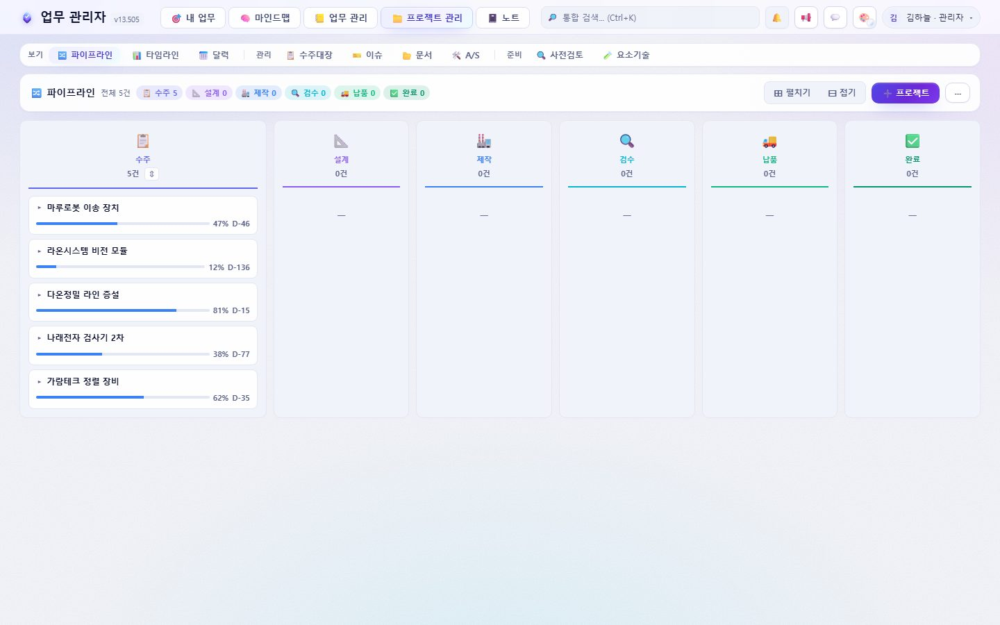
수주 → 설계 → 제작 → 검수 → 납품 → 완료 단계로 진행률을 관리합니다. 프로젝트 하나를 누르면 모든 것이 한 화면에 있습니다.

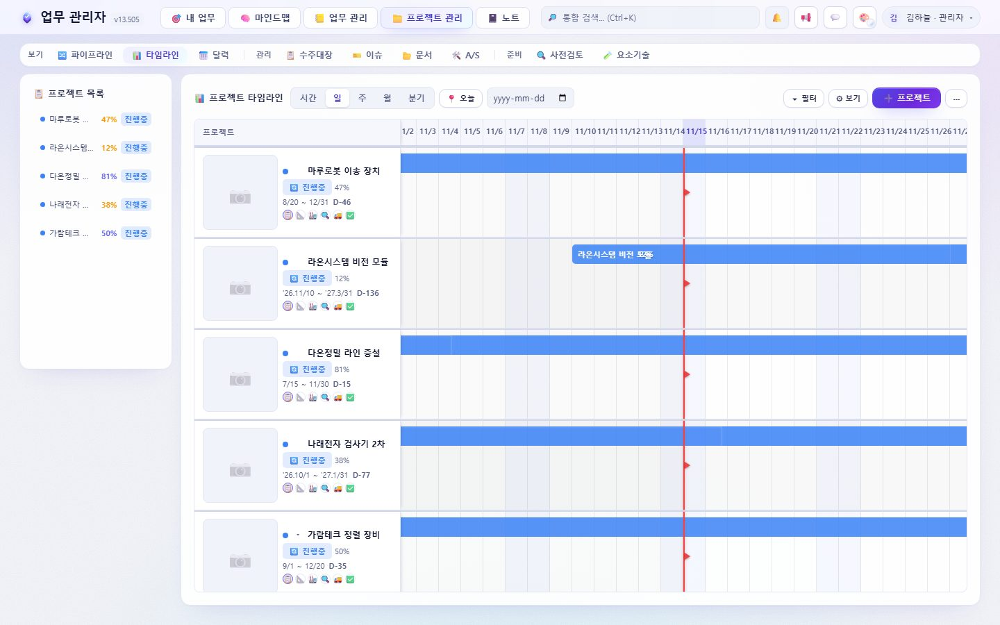

회의 · 기획 내용을 가지로 펼치고, 그대로 일정과 담당으로 이어 갑니다.
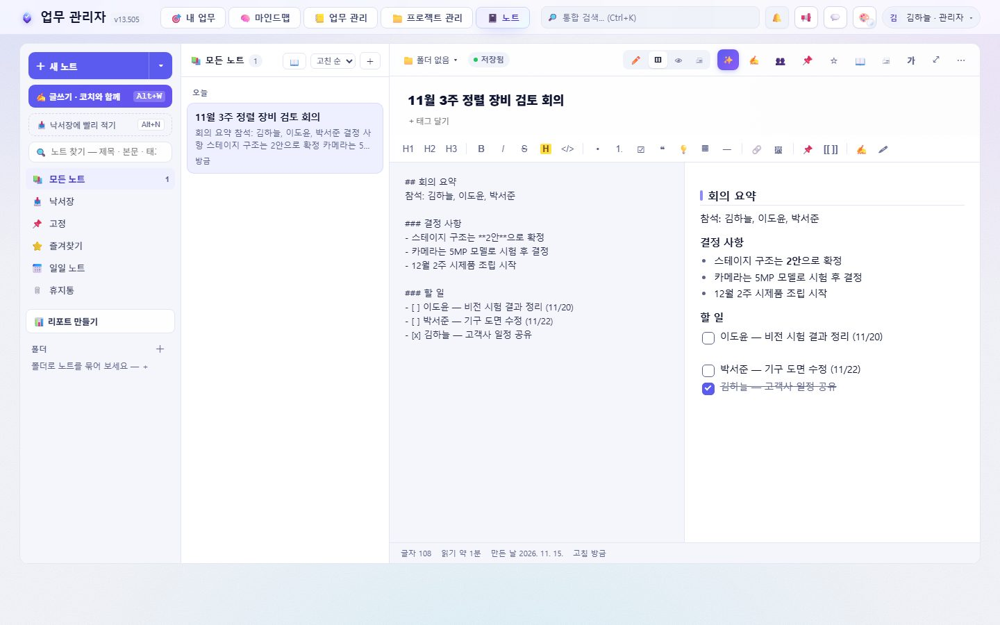
쓰면서 바로 종이 모양으로 보고, 같은 양식으로 묶어 출력합니다.

1:1 · 그룹 · 프로젝트 방에서 대화하고, 업무 카드와 파일을 그대로 주고받습니다.
자주 쓰는 일은 짧게, 잊기 쉬운 일은 알아서.
Ctrl+K — 프로젝트 · 이슈 · 회의 · 할 일 · 업무일지를 한 번에, 찾은 자리를 형광으로.
"이번 주 지연 위험 프로젝트는?" 처럼 물으면 우리 데이터로 답합니다. 월요일 아침 브리핑.
내 일정 · 할 일 알림을 받고, 말로 등록하고, 답장으로 처리합니다.
공지사항 · 멘션 · 마감 · 새 버전 알림을 한 곳에서. 방해 금지 시간도 정할 수 있습니다.
밝게 / 어둡게 · 시그니처 테마 · 글자 크기 · 선명한 글씨체를 내 눈에 맞게.
회사별로 데이터를 나누고, 프로젝트마다 공개 범위를 정합니다. DB는 매일 백업합니다.
휴대폰에서는 화면이 한 손에 맞게 바뀝니다. 왼쪽 위 검은 캡슐(아일랜드)을 누르면 빠른 메뉴가 펼쳐지고, 단추는 손가락으로 누르기 좋은 크기입니다.
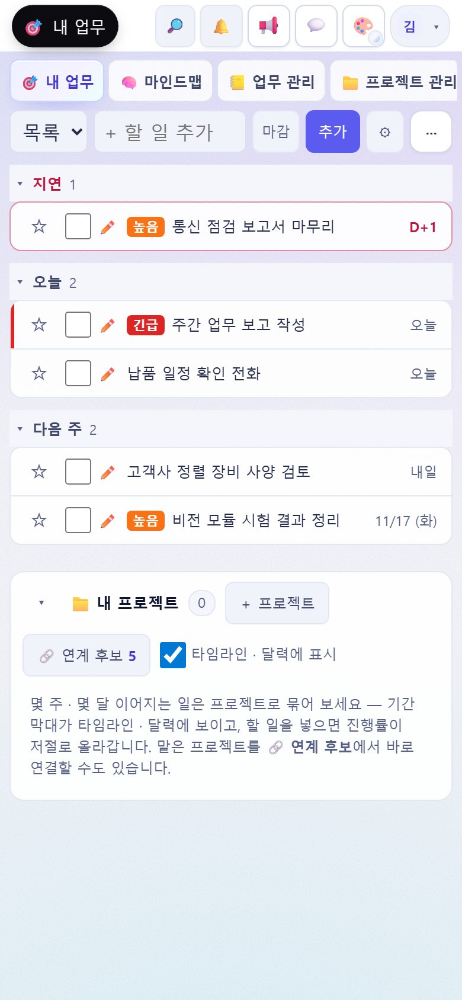

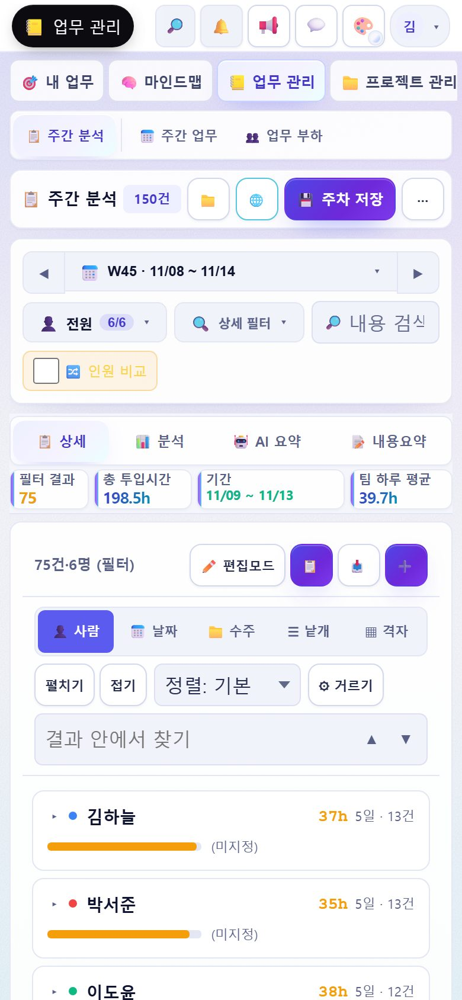
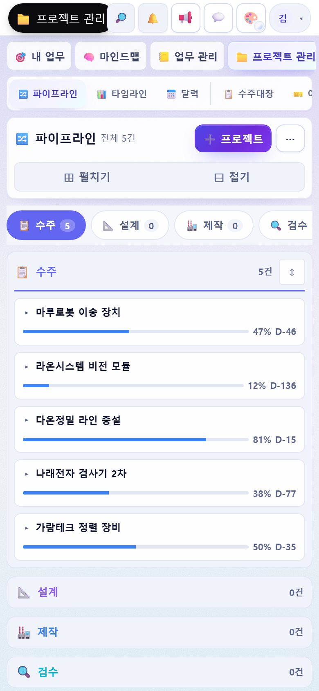
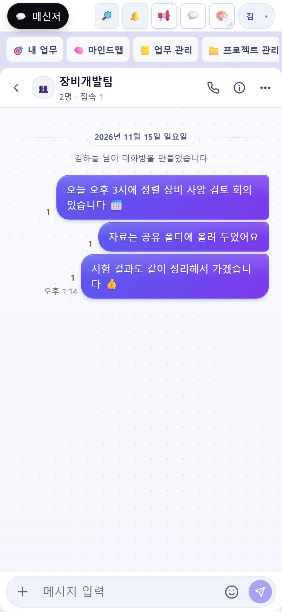
새 버전이 나오면 알려 주고, 새로 고치면 바로 적용됩니다. 계정은 회사 관리자에게 받습니다.
WorkManager-Setup-x.y.z.exe)을 받아 실행합니다.로그인부터 할 일 · 업무일지 · 프로젝트 · 메신저까지 순서대로.